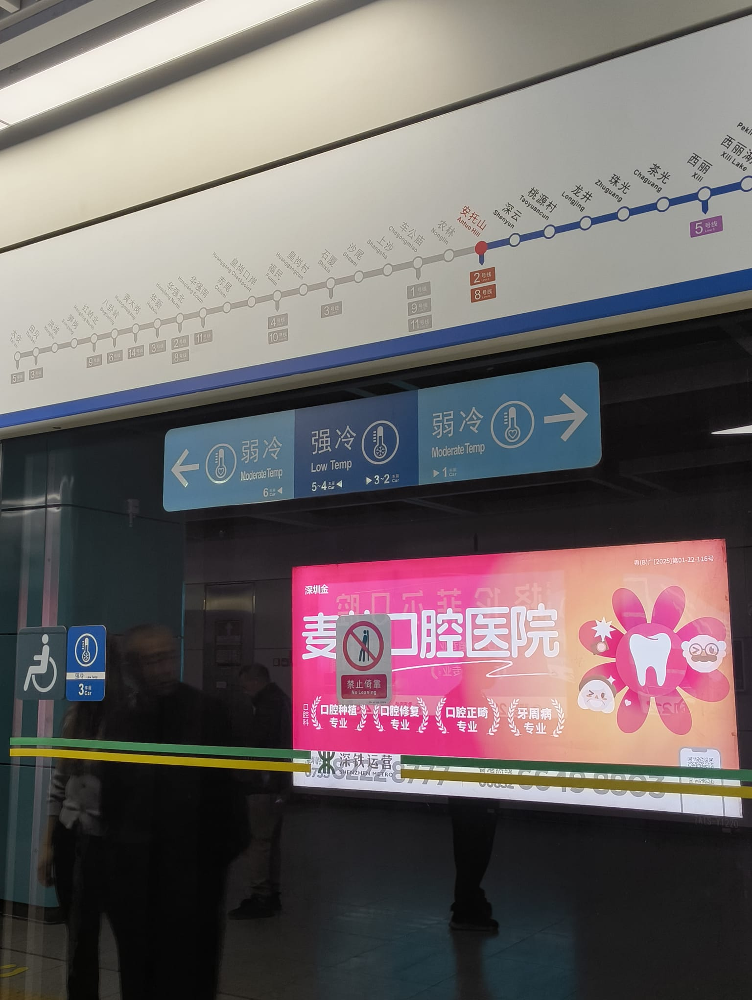
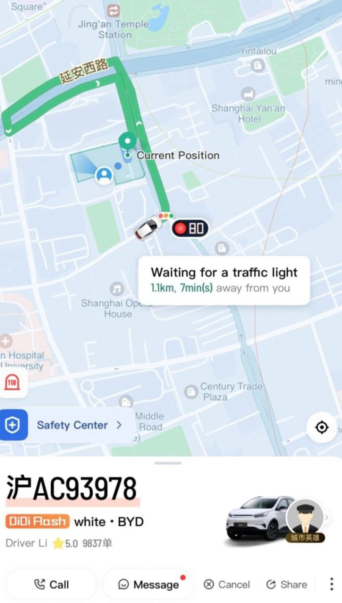
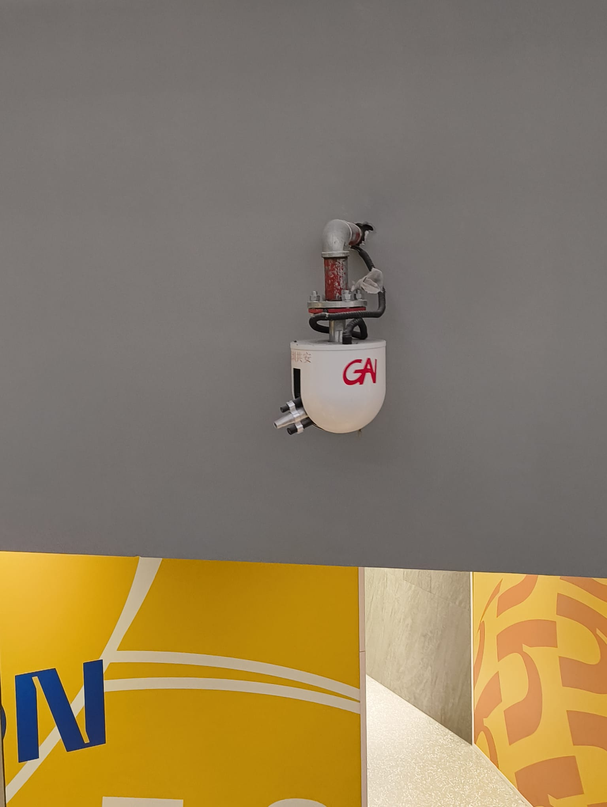
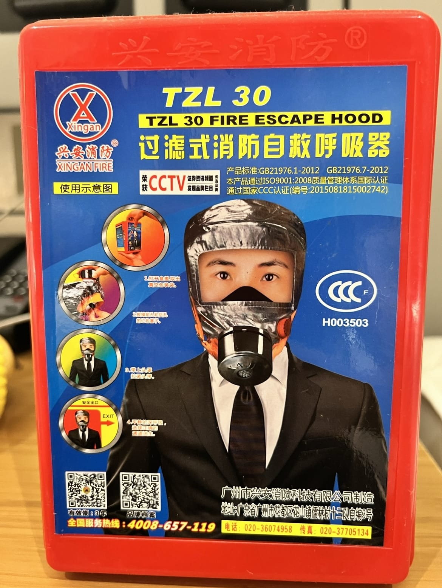
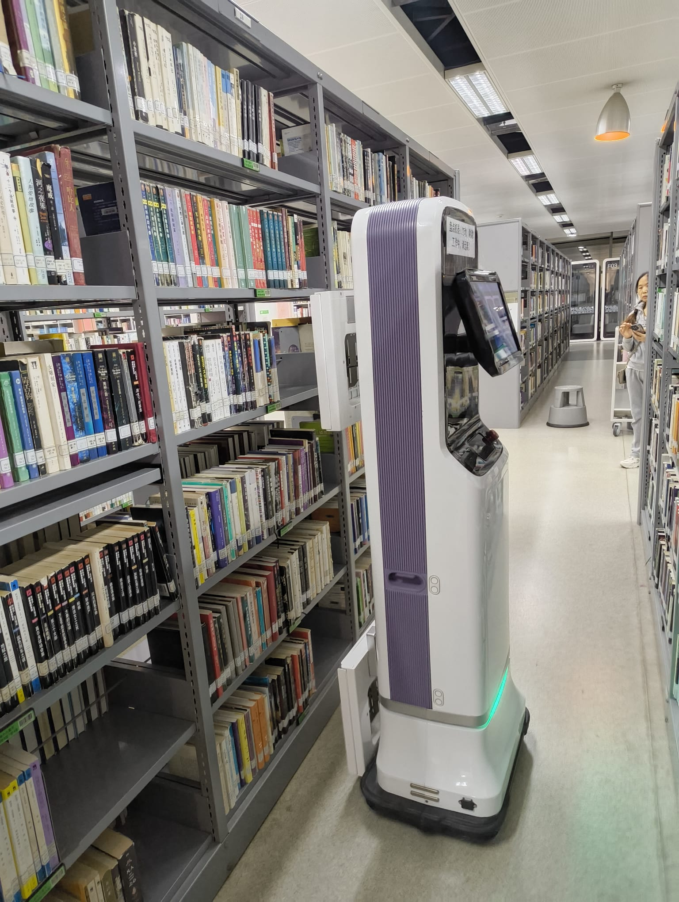
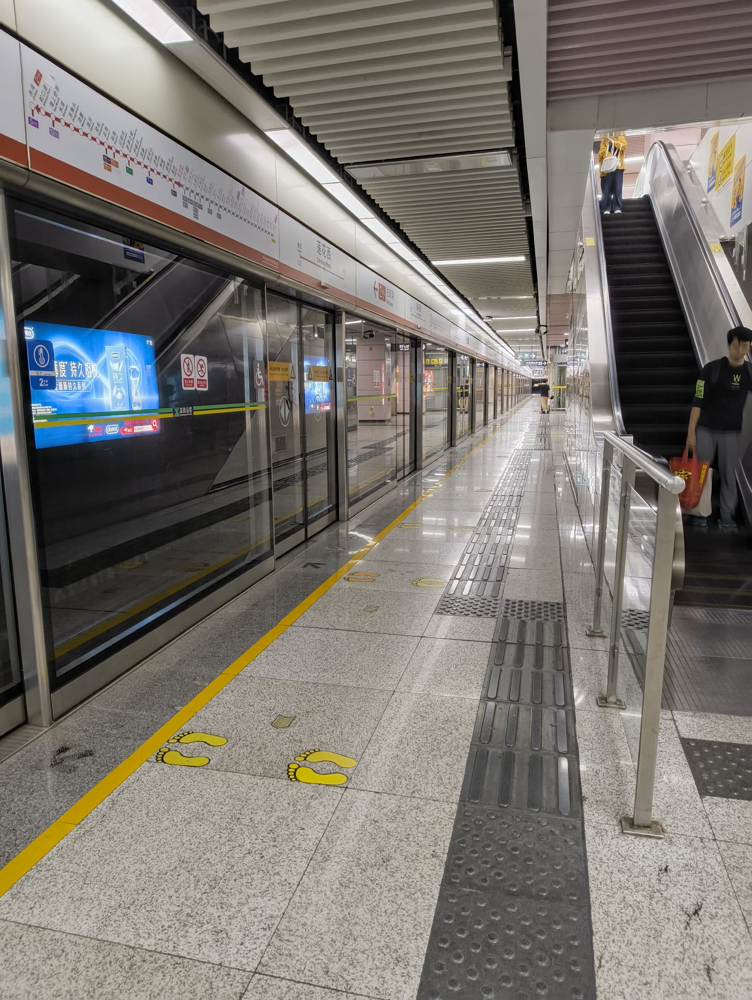

Thought about China.
Vol. 1
Spent a week in Shenzhen kickstarting my life's work in robotics, these are my impressions:
- Western Propaganda is much stronger than what I thought existed (Which was close to 0).
Every day I saw a China on social media that simply does not exist in real life. - The "Great Chinese Firewall" is not the censorship people think, there's even a list of government approved VPNs.
My guess is that the firewall is up mainly to keep the Chinese culture alive and thriving. - If anything, the censorship works the other way around.
Elon Musk's ideas for an "Everything App" is truly alive and well in China.
If westerners saw the amount of technologic savyness and ease it brings to chinese daily life, they would be fighting in favor of big tech. - Almost nobody speaks english in China, which came as a shock to me. Apparently english is far from being the world's language.
The understanding I got from this phenomenon is two fold:- Firstly, they do it on purpose to "not dilute" chinese culture.
- But also because they simply don't need to. China is so big that they have enough volume of media/news to not justify learning another language.
- Chinese people are some of the friendliest I've interacted with. Without a single word being understood between us, they would go out of their way to help me any way they could.
- Business in China is nothing like Portugal/Europe.
For starters, they are much more friendly.
They actually want to do business, they don't seem like they are doing you a favor.
But primarily, the sheer enormous economies of scale at play here dominate over any other place on earth.
Nice details found in Shenzhen:
- Metro cars are divided based on your preferred ambient temperature.

- Didi (the equivalent to Uber) gives me a countdown for each traffic light.

- All the buildings are extremely safe if a fire was to break out, just look at these automated sprinklers + fire masks.


- Robots are everywhere, even the librarians are being replaced.

- Being a public transport enthusiast, Shenzhen metro (being the fifth largest in the world) satisfied all my desires.
Cheap, clean, safe and convenient.
The epitome of urban design, a concept that seems to be forbidden in Portugal. 😂
China has a bright future ahead.